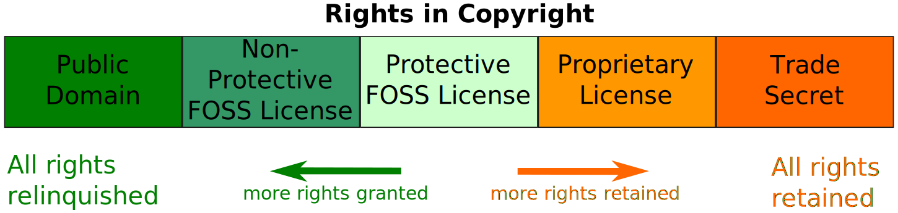

Una licencia de software es un contrato entre el licenciante (autor/titular de los derechos de explotación/distribuidor) y el licenciatario2 (usuario consumidor/usuario profesional o empresa) del programa informático, para utilizar el software cumpliendo una serie de términos y condiciones establecidas dentro de sus cláusulas,3 es decir, es un conjunto de permisos que un desarrollador le puede otorgar a un usuario en los que tiene la posibilidad de distribuir, usar y/o modificar el producto bajo una licencia determinada. Además se suelen definir los plazos de duración, el territorio donde se aplica la licencia (ya que la licencia se soporta en las leyes particulares de cada país o región), entre otros.
 Clasificación de las licencias de softwareSe puede crear una obra derivada sin que ésta tenga obligación de protección alguna. Muchas licencias pertenecen a esta clase.
Estas licencias aplican algunas restricciones a las obras derivadas, haciendo que según el grado de aplicación se puedan dividir a su vez en dos subcategorías:
Las licencias de software de código abierto robustas fuertes o con copyleft fuerte, contienen una cláusula que obliga a que las obras derivadas o modificaciones que se realicen al software original se deban licenciar bajo los mismos términos y condiciones de la licencia original.
Las licencias de software de código abierto robustas débiles, con copyleft débil/suave o híbridas, contienen una cláusula que obliga a que las modificaciones que se realicen al software original se deban licenciar bajo los mismos términos y condiciones de la licencia original, pero que las obras derivadas que se puedan realizar de él puedan ser licenciadas bajo otros términos y condiciones distintas.
Estas licencias también se conocen con el nombre de software propietario o privativo. En ellas los propietarios establecen los derechos de uso, distribución, redistribución, copia, modificación, cesión y en general cualquier otra consideración que se estime necesaria.
Este tipo de licencias, por lo general, no permiten que el software sea modificado, desensamblado, copiado o distribuido de formas no especificadas en la propia licencia (piratería de software), regula el número de copias que pueden ser instaladas e incluso los fines concretos para los cuales puede ser utilizado. La mayoría de estas licencias limitan fuertemente la responsabilidad derivada de fallos en el programa.
Los fabricantes de programas sometidos a este tipo de licencias por lo general ofrecen servicios de soporte técnico y actualizaciones durante el tiempo de vida del producto.
Se permite uso, copia, modificación o redistribución con o sin fines de lucro.
En inglés EULA o End User License Agreement, es una licencia por la cual el uso de un producto sólo está permitido para un único usuario (el comprador).
En este tipo de contrato, el dueño de los derechos de un producto insta al usuario final de éste a que reconozca tener conocimiento de las restricciones de uso, de los derechos del autor (copyright), de las patentes, etc. y que acepte de conformidad.
El conocimiento del contenido de los contratos es difícil antes de la compra del producto ya que las cajas de los productos raramente contienen una copia completa del mismo, dándose que el comprador en la mayor parte de las ocasiones conoce su contenido después de la compra.
En ocasiones se exige al usuario el renunciar a realizar reclamos o demandas legales por diversos motivos (tales como posibles daños producidos por el producto o fallos en él) o aceptar la restitución de la mercancía en la forma y monto que la compañía decida.
Este tipo de acuerdo expresa los usos que se pueden dar y cuáles no al producto, ya que quien lo compra no es, legalmente, en ninguna forma dueño del producto, sino sólo de una licencia para su uso, considerándose esto último por algunas personas como una limitación a los derechos del consumidor
Este tipo de acuerdos son unilaterales pues el usuario no tiene más opción que aceptar o rechazar el contenido del mismo (en algunos países existen organizaciones de protección al consumidor que autorizan ciertas excepciones).
En este tipo de contrato, se le asigna derechos restringidos a un comerciante de tipo comisionario para que venda el producto(software) dando una remesa o comisión al fabricante. La misma puede ser por primera venta o licencia de renovación de contrato. No se trata de una licencia de uso en términos jurídicos, sino más bien en un acuerdo comercial en la que no tiene porque ser cedido el derecho de distribución necesariamente. Puede darse el caso de simple actividad comercial en la que el distribuidor ni siquiera tenga contacto con el software, y éste como elemento y la licencia de uso en si sea directamente suscrita y puesta a disposición por parte del fabricante. Encargándose el distribuidor del correspondiente cobro al usuario y pago al fabricante menos su margen.